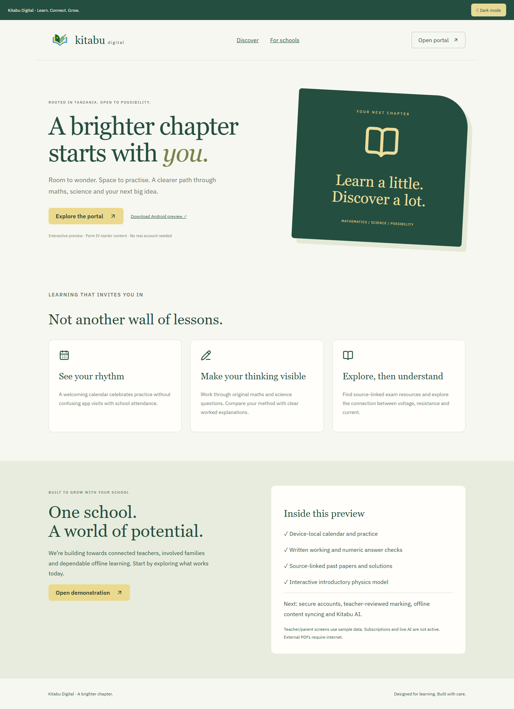
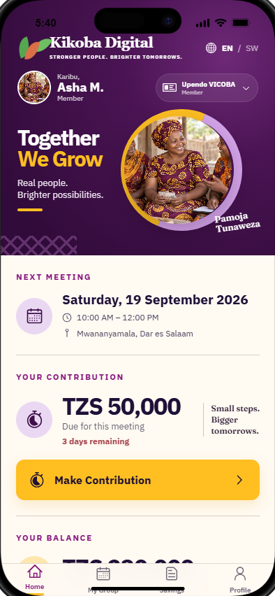

Education platform
Kitabu Digital
An offline-minded learning portal for Tanzanian students, schools, and families, focused on dependable access and clear discovery.
- React
- Responsive UI
- Offline-first
- Accessibility
Computer Engineering + Product Development
Software, Android products, networks, and secure digital tools built for real needs.
Selected work
Two practical platforms designed, built, tested, and presented as working experiences.

Education platform
An offline-minded learning portal for Tanzanian students, schools, and families, focused on dependable access and clear discovery.

Community finance application
An offline-first Android system for savings groups, covering membership, contributions, expenses, meetings, roles, and local elections.
I connect software development with the infrastructure and security knowledge needed to deliver dependable systems.
01
Python, Java, C, JavaScript, React, HTML, CSS, Android packaging, Kotlin, and Git-based delivery.
02
IP addressing, subnetting, VLANs, routing, switching, OSPF, EIGRP, NAT, DHCP, Linux, and AWS fundamentals.
03
Dar es Salaam Institute of Technology. Developing foundations across computing, electronics, software, and infrastructure.
Completed the CCNA curriculum with hands-on configuration and troubleshooting of routers, switches, and network services.
Studied threat modeling, vulnerability assessment, web application security, cryptography, security tooling, and incident response.
Building Android and web products while developing practical security depth through CTF challenges and lab environments.
Start a conversation
I am open to internships, junior opportunities, technical collaborations, and practical projects.